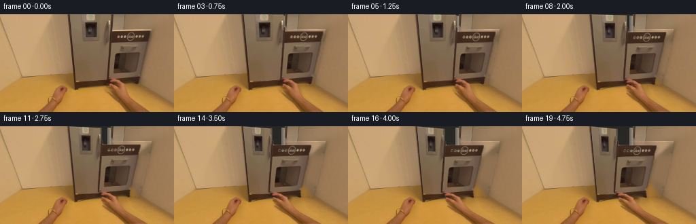
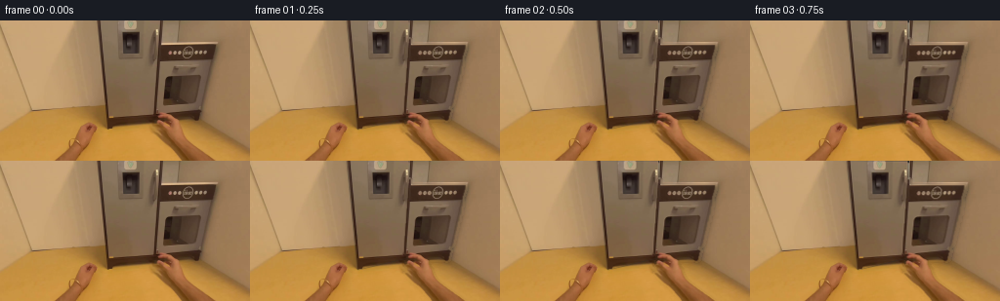

CODING AGENTS AS PIXEL WORLD MODELS
traex/GPT-5.6-Sol · common50_0020
点击播放 · 原生 RGB 像素
逐轮保存的候选
回放视频、检查图与代码变化。
每份候选均可单独播放。实际图片检查记录在下方工具轨迹中。
候选 01播放与检查图
点击播放 · 原生 RGB 像素


展开代码变化
--- 上一保存版本
+++ 本次保存版本
@@ -0,0 +1,198 @@
+from pathlib import Path
+import cv2
+import numpy as np
+from PIL import Image
+import artifact_io
+
+W, H = 256, 144
+ROOT = Path(__file__).resolve().parent
+
+
+def smoothstep(x):
+ x = np.clip(x, 0.0, 1.0)
+ return x*x*(3.0-2.0*x)
+
+
+def rgba_over(dst, rgb, alpha):
+ """Alpha composite float/uint8 RGB onto float RGB."""
+ a = np.clip(alpha, 0, 1)[..., None]
+ return dst*(1.0-a) + rgb*a
+
+
+def warped_layer(rgb, alpha, M, perspective=True):
+ flags = cv2.INTER_CUBIC
+ if perspective:
+ wa = cv2.warpPerspective(alpha.astype(np.float32), M, (W, H), flags=flags,
+ borderMode=cv2.BORDER_CONSTANT, borderValue=0)
+ premul = rgb.astype(np.float32) * alpha[..., None]
+ wp = cv2.warpPerspective(premul, M, (W, H), flags=flags,
+ borderMode=cv2.BORDER_CONSTANT, borderValue=0)
+ else:
+ wa = cv2.warpAffine(alpha.astype(np.float32), M, (W, H), flags=flags,
+ borderMode=cv2.BORDER_CONSTANT, borderValue=0)
+ premul = rgb.astype(np.float32) * alpha[..., None]
+ wp = cv2.warpAffine(premul, M, (W, H), flags=flags,
+ borderMode=cv2.BORDER_CONSTANT, borderValue=0)
+ wa = np.clip(wa, 0, 1)
+ wrgb = wp / np.maximum(wa[..., None], 1e-5)
+ return wrgb, wa
+
+
+def make_hand_mask(frame):
+ """Separate the already-visible right hand/forearm from the appliance."""
+ bgr = cv2.cvtColor(frame, cv2.COLOR_RGB2BGR)
+ mask = np.zeros((H, W), np.uint8)
+ bgd = np.zeros((1, 65), np.float64)
+ fgd = np.zeros((1, 65), np.float64)
+ cv2.setRNGSeed(1927)
+ cv2.grabCut(bgr, mask, (150, 15, 76, 129), bgd, fgd, 8, cv2.GC_INIT_WITH_RECT)
+ raw = np.uint8((mask == cv2.GC_FGD) | (mask == cv2.GC_PR_FGD))
+ # Keep the single hand/arm component. It runs continuously out through the
+ # lower edge, while tiny isolated classifications are image texture.
+ count, labels, stats, _ = cv2.connectedComponentsWithStats(raw, 8)
+ if count > 1:
+ idx = 1 + np.argmax(stats[1:, cv2.CC_STAT_AREA])
+ raw = np.uint8(labels == idx)
+ raw = cv2.morphologyEx(raw, cv2.MORPH_CLOSE,
+ cv2.getStructuringElement(cv2.MORPH_ELLIPSE, (3, 3)))
+ # A subpixel matte, narrow enough to retain the natural finger silhouette.
+ alpha = cv2.GaussianBlur(raw.astype(np.float32), (0, 0), 0.62)
+ return np.clip(alpha, 0, 1), raw
+
+
+def make_clean_plate(frame, hand_binary):
+ # Telea reconstructs the simple metal/floor surfaces hidden by the arm.
+ m = cv2.dilate(hand_binary, cv2.getStructuringElement(cv2.MORPH_ELLIPSE, (5, 5)))
+ bgr = cv2.cvtColor(frame, cv2.COLOR_RGB2BGR)
+ clean = cv2.inpaint(bgr, m*255, 6, cv2.INPAINT_TELEA)
+ clean = cv2.cvtColor(clean, cv2.COLOR_BGR2RGB)
+ # Retain untouched source pixels right up to the matte, avoiding needless
+ # changes to the stationary scene.
+ return clean
+
+
+def make_interior(frame):
+ """A subdued warm-grey refrigerator cavity hidden behind the closed door."""
+ yy, xx = np.mgrid[0:H, 0:W]
+ interior = frame.astype(np.float32).copy()
+ # Dark depth with a slight top-to-bottom illumination gradient.
+ shade = 0.82 + 0.17*(yy/143.0)
+ base = np.zeros_like(interior)
+ base[..., 0] = 49*shade
+ base[..., 1] = 47*shade
+ base[..., 2] = 43*shade
+ interior[:] = base
+
+ # Rear liner, shelving, and just a few muted food shapes. These details are
+ # deliberately low contrast because only a slim opening is seen.
+ def rect(x0, y0, x1, y1, c):
+ cv2.rectangle(interior, (x0, y0), (x1, y1), tuple(map(float, c)), -1, cv2.LINE_AA)
+ # pale inner jamb at the fixed right side
+ rect(158, 2, 164, 99, (117, 111, 99))
+ rect(161, 3, 164, 98, (145, 136, 117))
+ # shelf lips, in perspective
+ cv2.line(interior, (111, 35), (163, 32), (126, 122, 111), 2, cv2.LINE_AA)
+ cv2.line(interior, (111, 37), (163, 34), (64, 62, 58), 1, cv2.LINE_AA)
+ cv2.line(interior, (111, 69), (164, 66), (133, 127, 114), 2, cv2.LINE_AA)
+ cv2.line(interior, (111, 71), (164, 68), (65, 61, 55), 1, cv2.LINE_AA)
+ cv2.line(interior, (111, 91), (164, 88), (119, 112, 98), 2, cv2.LINE_AA)
+ # silhouettes on shelves; rightmost portions become visible first
+ rect(148, 44, 155, 66, (91, 98, 87))
+ rect(150, 41, 154, 44, (126, 114, 89))
+ rect(139, 51, 147, 67, (72, 78, 69))
+ rect(153, 74, 160, 87, (96, 79, 61))
+ rect(155, 72, 158, 74, (137, 108, 72))
+ # subtle grain sampled mathematically, matching the source's modest texture
+ noise = (np.sin(xx*1.73 + yy*.61) + np.sin(xx*.37 - yy*1.19))*0.7
+ interior += noise[..., None]
+ return np.clip(interior, 0, 255)
+
+
+def warp_hand_layer(frame, alpha, progress, tremor):
+ """Pulling motion with the gripping fingers following the door while the
+ forearm remains nearly anchored at the lower frame edge."""
+ yd, xd = np.mgrid[0:H, 0:W].astype(np.float32)
+ anchor = 0.15 + 0.85*np.clip((144.0-yd)/48.0, 0.0, 1.0)
+ dx = (-23.0*progress + tremor)*anchor
+ dy = (3.2*progress)*anchor
+ # Inverse dense map. Re-evaluating the anchor at source y is unnecessary at
+ # this small displacement and would introduce a less stable edge.
+ mapx = (xd - dx).astype(np.float32)
+ mapy = (yd - dy).astype(np.float32)
+ a = cv2.remap(alpha.astype(np.float32), mapx, mapy, cv2.INTER_CUBIC,
+ borderMode=cv2.BORDER_CONSTANT, borderValue=0)
+ premul = frame.astype(np.float32)*alpha[..., None]
+ pm = cv2.remap(premul, mapx, mapy, cv2.INTER_CUBIC,
+ borderMode=cv2.BORDER_CONSTANT, borderValue=0)
+ a = np.clip(a, 0, 1)
+ rgb = pm/np.maximum(a[..., None], 1e-5)
+ return rgb, a
+
+
+def generate():
+ frame0 = np.asarray(Image.open(ROOT/'first_frame.png').convert('RGB'), dtype=np.uint8)
+ assert frame0.shape == (H, W, 3)
+
+ hand_alpha, hand_binary = make_hand_mask(frame0)
+ clean = make_clean_plate(frame0, hand_binary)
+
+ # The central quadrilateral is the grey door: the long diagonal at its left
+ # is the hinge-side seam, and its right rim is under the gripping fingers.
+ src = np.float32([[99, 0], [162, 0], [164, 98], [110, 111]])
+ door_mask = np.zeros((H, W), np.uint8)
+ cv2.fillConvexPoly(door_mask, np.round(src).astype(np.int32), 255, cv2.LINE_AA)
+ door_alpha = cv2.GaussianBlur(door_mask.astype(np.float32)/255.0, (0, 0), .38)
+
+ # Door source with the occluding hand removed. The narrow rim is recreated
+ # below so it remains mechanically attached throughout the swing.
+ door_rgb = clean.astype(np.float32)
+ interior = make_interior(frame0)
+
+ frames = [frame0.copy()]
+ for i in range(1, 20):
+ t = i/19.0
+ # A slow initial grip/tug, then a smooth partial opening and gentle stop.
+ p = smoothstep(t)
+ p = min(1.0, p)
+ tremor = 0.22*np.sin(i*1.31)*(p**1.8)
+
+ # Start from the scene with the person removed. Replace the complete
+ # closed-door footprint by the cavity, then cover it by the swung panel.
+ canvas = clean.astype(np.float32).copy()
+ canvas = rgba_over(canvas, interior, door_alpha)
+
+ dst = src.copy()
+ dst[1] = (162.0 - 23.0*p, 4.0*p)
+ dst[2] = (164.0 - 22.0*p, 98.0 + 4.0*p)
+ M = cv2.getPerspectiveTransform(src, dst)
+ wrgb, wa = warped_layer(door_rgb, door_alpha, M, perspective=True)
+ # Small photometric cue as the front turns away from the room light.
+ wrgb = wrgb*(1.0 - .045*p) + np.array([2.1, 2.0, 1.8])*p
+ canvas = rgba_over(canvas, wrgb, wa)
+
+ # Thin metallic outer rim at the moving free edge. It is mainly occluded
+ # by the real hand but clarifies that the panel, not the camera, moves.
+ edge_layer = np.zeros((H, W, 3), np.float32)
+ edge_a = np.zeros((H, W), np.float32)
+ a = tuple(np.round(dst[1]).astype(int)); b = tuple(np.round(dst[2]).astype(int))
+ cv2.line(edge_a, a, b, 0.78, 2, cv2.LINE_AA)
+ edge_layer[:] = (83, 76, 65)
+ canvas = rgba_over(canvas, edge_layer, edge_a*p)
+
+ # Contact shadow first, then the articulated source hand and forearm.
+ hrgb, ha = warp_hand_layer(frame0, hand_alpha, p, tremor)
+ shadow = cv2.GaussianBlur(ha, (0, 0), 2.0)
+ shadow = np.roll(shadow, (2, 2), axis=(0, 1))
+ shadow[:2, :] = 0; shadow[:, :2] = 0
+ canvas *= (1.0 - (0.11 + .025*p)*shadow[..., None])
+ canvas = rgba_over(canvas, hrgb, ha)
+
+ frames.append(np.clip(np.rint(canvas), 0, 255).astype(np.uint8))
+
+ out = np.stack(frames, axis=0)
+ assert np.array_equal(out[0], frame0)
+ return out
+
+
+if __name__ == '__main__':
+ artifact_io.save(generate(), ROOT)
可观测工具轨迹
实际执行的命令与返回图片。
命令 1exit 0
/bin/bash -lc "cat GENERATION_RULES.md && printf '\\n--- PROMPT ---\\n' && cat prompt.txt"
命令 2exit 0
/bin/bash -lc "find . -maxdepth 2 -type f -printf '%p\\n' | sort && printf '\\n--- image metadata ---\\n' && python3 - <<'PY'
from PIL import Image
im=Image.open('first_frame.png')
print(im.size,im.mode)
print(im.getbbox())
PY"命令 3exit 0
/bin/bash -lc "cat task_spec.json && sed -n '1,240p' artifact_io.py"
命令 4exit 0
/bin/bash -lc "python3 - <<'PY'
import importlib.util
for x in ['cv2','scipy','skimage','imageio','matplotlib']:
print(x, bool(importlib.util.find_spec(x)))
from PIL import Image
import numpy as np
im=np.array(Image.open('first_frame.png'))
print('stats mean',im.mean((0,1)), 'std', im.std((0,1)), 'min', im.min((0,1)), 'max',im.max((0,1)))
# grid cell RGB mean 16x12 cells
for y in range(0,144,12):
print('ROW',y, ['%02x%02x%02x'%tuple(im[y:y+12,x:x+16].mean((0,1)).astype(int)) for x in range(0,256,16)])
PY"命令 5exit 0
/bin/bash -lc "python3 - <<'PY'
from PIL import Image
import numpy as np
im=np.array(Image.open('first_frame.png')).astype(float)
# luminance, 4x3 blocks -> 64x48
lum=im@np.array([.2126,.7152,.0722])
chars=' .,:;irsXA253hMHGS#9B&@'
for y in range(0,144,3):
s=''
for x in range(0,256,4):
v=lum[y:y+3,x:x+4].mean()
s+=chars[min(len(chars)-1,int(v/256*len(chars)))]
print(s)
PY"命令 6exit 0
/bin/bash -lc "python3 - <<'PY'
import cv2, numpy as np
from PIL import Image
im=np.array(Image.open('first_frame.png'))
g=cv2.cvtColor(im,cv2.COLOR_RGB2GRAY)
edge=cv2.Canny(g,35,100)
ls=cv2.HoughLinesP(edge,1,np.pi/360,threshold=25,minLineLength=18,maxLineGap=4)
res=[]
for l in ls[:,0]:
x1,y1,x2,y2=map(int,l); le=((x2-x1)**2+(y2-y1)**2)**.5; ang=np.degrees(np.arctan2(y2-y1,x2-x1)); res.append((round(le,1),round(ang,1),(x1,y1,x2,y2)))
for x in sorted(res,reverse=True)[:80]: print(x)
PY"命令 7exit 2
/bin/bash -lc "cat > /tmp/an.py <<'PY'
import cv2, numpy as np
from PIL import Image
im=np.array(Image.open('first_frame.png'))
lab=cv2.cvtColor(im,cv2.COLOR_RGB2LAB)
data=lab.reshape(-1,3).astype(np.float32)
crit=(cv2.TERM_CRITERIA_EPS+cv2.TERM_CRITERIA_MAX_ITER,100,.2)
_, labels, cen=cv2.kmeans(data,10,None,crit,10,cv2.KMEANS_PP_CENTERS)
labels=labels.reshape(144,256)
rgb=[]
for k in range(10):rgb.append(im[labels==k].mean(0).astype(int))
order=sorted(range(10),key=lambda k: rgb[k].mean())
syms='0123456789'; mp={k:syms[i] for i,k in enumerate(order)}
print([(mp[k],rgb[k].tolist(),int((labels==k).sum())) for k in order])
# modal each 4x3
for y in range(0,144,3):
s=''
for x in range(0,256,4):
vals,cnt=np.unique(labels[y:y+3,x:x+4],return_counts=True)
s+=mp[vals[cnt.argmax()]]
print(s)
PY
python3 /tmp/an.py"命令 8exit 0
/bin/bash -lc "cat > .tmp/an.py <<'PY'
import cv2, numpy as np
from PIL import Image
im=np.array(Image.open('first_frame.png'))
lab=cv2.cvtColor(im,cv2.COLOR_RGB2LAB)
data=lab.reshape(-1,3).astype(np.float32)
crit=(cv2.TERM_CRITERIA_EPS+cv2.TERM_CRITERIA_MAX_ITER,100,.2)
_, labels, cen=cv2.kmeans(data,10,None,crit,10,cv2.KMEANS_PP_CENTERS)
labels=labels.reshape(144,256)
rgb=[]
for k in range(10):rgb.append(im[labels==k].mean(0).astype(int))
order=sorted(range(10),key=lambda k: rgb[k].mean())
syms='0123456789'; mp={k:syms[i] for i,k in enumerate(order)}
print([(mp[k],rgb[k].tolist(),int((labels==k).sum())) for k in order])
for y in range(0,144,3):
s=''
for x in range(0,256,4):
vals,cnt=np.unique(labels[y:y+3,x:x+4],return_counts=True)
s+=mp[vals[cnt.argmax()]]
print(s)
PY
python3 .tmp/an.py"命令 9exit 0
/bin/bash -lc "python3 - <<'PY'
from PIL import Image
import numpy as np,cv2
im=np.array(Image.open('first_frame.png'))
# print 8x8 patch rgb means around central/right, y0-120
for y in range(0,120,8):
print('\\ny',y)
for x in range(80,256,8):
a=im[y:y+8,x:x+8].mean((0,1)).astype(int)
print(f'{x}:{a[0]:02x}{a[1]:02x}{a[2]:02x}',end=' ')
print()
# Gradient sums vertical/horiz
G=cv2.cvtColor(im,cv2.COLOR_RGB2GRAY).astype(float)
gx=np.abs(np.diff(G,axis=1)).mean(0); gy=np.abs(np.diff(G,axis=0)).mean(1)
print('\\ntop gx',sorted(enumerate(gx),key=lambda z:z[1], reverse=True)[:30])
print('top gy',sorted(enumerate(gy),key=lambda z:z[1], reverse=True)[:30])
PY"命令 10exit 0
/bin/bash -lc "python3 - <<'PY'
from PIL import Image
import numpy as np, cv2
im=np.array(Image.open('first_frame.png'))
# summaries of blocks: mean std edge density
G=cv2.cvtColor(im,cv2.COLOR_RGB2GRAY)
E=cv2.Canny(G,30,80)
for y0,y1 in [(0,24),(24,56),(56,88),(88,112),(112,144)]:
print('Y',y0,y1)
for x0,x1 in [(0,50),(50,100),(100,125),(125,160),(160,190),(190,220),(220,256)]:
a=im[y0:y1,x0:x1]; e=E[y0:y1,x0:x1]
print(f'{x0}-{x1}: m{a.mean((0,1)).astype(int)} s{a.std():.1f} e{(e>0).mean():.2f}',end=' | ')
print()
# hsv percentile and skin candidates connected regions
hsv=cv2.cvtColor(im,cv2.COLOR_RGB2HSV)
for q in [0,10,25,50,75,90,100]:print(q,np.percentile(hsv.reshape(-1,3),q,axis=0))
PY"命令 11exit 0
/bin/bash -lc "python3 - <<'PY'
import cv2,numpy as np
from PIL import Image
im=cv2.cvtColor(np.array(Image.open('first_frame.png')),cv2.COLOR_RGB2BGR)
for rect in [(145,15,82,128),(150,20,72,124),(108,8,115,136),(150,80,75,64)]:
mask=np.zeros(im.shape[:2],np.uint8); bg=np.zeros((1,65),np.float64); fg=np.zeros((1,65),np.float64)
cv2.grabCut(im,mask,rect,bg,fg,8,cv2.GC_INIT_WITH_RECT)
m=np.where((mask==1)|(mask==3),1,0).astype(np.uint8)
n,lab,stat,cen=cv2.connectedComponentsWithStats(m)
comps=sorted([(int(stat[i,4]),tuple(stat[i,:4]),tuple(np.round(cen[i],1))) for i in range(1,n)],reverse=True)
print(rect,comps[:10])
# ascii
for y in range(0,144,6):print(''.join('#' if m[y:y+6,x:x+6].mean()>.4 else ('+' if m[y:y+6,x:x+6].mean()>.05 else ' ') for x in range(0,256,6)))
print()
PY"命令 12exit 0
/bin/bash -lc "python3 - <<'PY'
from PIL import Image
import cv2,numpy as np
im=np.array(Image.open('first_frame.png')); g=cv2.cvtColor(im,cv2.COLOR_RGB2GRAY); e=cv2.Canny(g,20,60)
for y in range(0,144,2):
s=''
for x in range(0,256,2):
q=e[y:y+2,x:x+2]
s += '#' if q.mean()>.45 else '+' if q.any() else ' '
print(f'{y:03d} '+s)
PY"命令 13exit 1
/bin/bash -lc "cat > generate.py <<'PY'
from pathlib import Path
import cv2
import numpy as np
from PIL import Image
import artifact_io
W, H = 256, 144
ROOT = Path(__file__).resolve().parent
def smoothstep(x):
x = np.clip(x, 0.0, 1.0)
return x*x*(3.0-2.0*x)
def rgba_over(dst, rgb, alpha):
\"\"\"Alpha composite float/uint8 RGB onto float RGB.\"\"\"
a = np.clip(alpha, 0, 1)[..., None]
return dst*(1.0-a) + rgb*a
def warped_layer(rgb, alpha, M, perspective=True):
flags = cv2.INTER_CUBIC
if perspective:
wa = cv2.warpPerspective(alpha.astype(np.float32), M, (W, H), flags=flags,
borderMode=cv2.BORDER_CONSTANT, borderValue=0)
premul = rgb.astype(np.float32) * alpha[..., None]
wp = cv2.warpPerspective(premul, M, (W, H), flags=flags,
borderMode=cv2.BORDER_CONSTANT, borderValue=0)
else:
wa = cv2.warpAffine(alpha.astype(np.float32), M, (W, H), flags=flags,
borderMode=cv2.BORDER_CONSTANT, borderValue=0)
premul = rgb.astype(np.float32) * alpha[..., None]
wp = cv2.warpAffine(premul, M, (W, H), flags=flags,
borderMode=cv2.BORDER_CONSTANT, borderValue=0)
wa = np.clip(wa, 0, 1)
wrgb = wp / np.maximum(wa[..., None], 1e-5)
return wrgb, wa
def make_hand_mask(frame):
\"\"\"Separate the already-visible right hand/forearm from the appliance.\"\"\"
bgr = cv2.cvtColor(frame, cv2.COLOR_RGB2BGR)
mask = np.zeros((H, W), np.uint8)
bgd = np.zeros((1, 65), np.float64)
fgd = np.zeros((1, 65), np.float64)
cv2.setRNGSeed(1927)
cv2.grabCut(bgr, mask, (150, 15, 76, 129), bgd, fgd, 8, cv2.GC_INIT_WITH_RECT)
raw = np.uint8((mask == cv2.GC_FGD) | (mask == cv2.GC_PR_FGD))
# Keep the single hand/arm component. It runs continuously out through the
# lower edge, while tiny isolated classifications are image texture.
count, labels, stats, _ = cv2.connectedComponentsWithStats(raw, 8)
if count > 1:
idx = 1 + np.argmax(stats[1:, cv2.CC_STAT_AREA])
raw = np.uint8(labels == idx)
raw = cv2.morphologyEx(raw, cv2.MORPH_CLOSE,
cv2.getStructuringElement(cv2.MORPH_ELLIPSE, (3, 3)))
# A subpixel matte, narrow enough to retain the natural finger silhouette.
alpha = cv2.GaussianBlur(raw.astype(np.float32), (0, 0), 0.62)
return np.clip(alpha, 0, 1), raw
def make_clean_plate(frame, hand_binary):
# Telea reconstructs the simple metal/floor surfaces hidden by the arm.
m = cv2.dilate(hand_binary, cv2.getStructuringElement(cv2.MORPH_ELLIPSE, (5, 5)))
bgr = cv2.cvtColor(frame, cv2.COLOR_RGB2BGR)
clean = cv2.inpaint(bgr, m*255, 6, cv2.INPAINT_TELEA)
clean = cv2.cvtColor(clean, cv2.COLOR_BGR2RGB)
# Retain untouched source pixels right up to the matte, avoiding needless
# changes to the stationary scene.
return clean
def make_interior(frame):
\"\"\"A subdued warm-grey refrigerator cavity hidden behind the closed door.\"\"\"
yy, xx = np.mgrid[0:H, 0:W]
interior = frame.astype(np.float32).copy()
# Dark depth with a slight top-to-bottom illumination gradient.
shade = 0.82 + 0.17*(yy/143.0)
base = np.zeros_like(interior)
base[..., 0] = 49*shade
base[..., 1] = 47*shade
base[..., 2] = 43*shade
interior[:] = base
# Rear liner, shelving, and just a few muted food shapes. These details are
# deliberately low contrast because only a slim opening is seen.
def rect(x0, y0, x1, y1, c):
cv2.rectangle(interior, (x0, y0), (x1, y1), tuple(map(float, c)), -1, cv2.LINE_AA)
# pale inner jamb at the fixed right side
rect(158, 2, 164, 99, (117, 111, 99))
rect(161, 3, 164, 98, (145, 136, 117))
# shelf lips, in perspective
cv2.line(interior, (111, 35), (163, 32), (126, 122, 111), 2, cv2.LINE_AA)
cv2.line(interior, (111, 37), (163, 34), (64, 62, 58), 1, cv2.LINE_AA)
cv2.line(interior, (111, 69), (164, 66), (133, 127, 114), 2, cv2.LINE_AA)
cv2.line(interior, (111, 71), (164, 68), (65, 61, 55), 1, cv2.LINE_AA)
cv2.line(interior, (111, 91), (164, 88), (119, 112, 98), 2, cv2.LINE_AA)
# silhouettes on shelves; rightmost portions become visible first
rect(148, 44, 155, 66, (91, 98, 87))
rect(150, 41, 154, 44, (126, 114, 89))
rect(139, 51, 147, 67, (72, 78, 69))
rect(153, 74, 160, 87, (96, 79, 61))
rect(155, 72, 158, 74, (137, 108, 72))
# subtle grain sampled mathematically, matching the source's modest texture
noise = (np.sin(xx*1.73 + yy*.61) + np.sin(xx*.37 - yy*1.19))*0.7
interior += noise[..., None]
return np.clip(interior, 0, 255)
def warp_hand_layer(frame, alpha, progress, tremor):
\"\"\"Pulling motion with the gripping fingers following the door while the
forearm remains nearly anchored at the lower frame edge.\"\"\"
yd, xd = np.mgrid[0:H, 0:W].astype(np.float32)
anchor = 0.15 + 0.85*np.clip((144.0-yd)/48.0, 0.0, 1.0)
dx = (-23.0*progress + tremor)*anchor
dy = (3.2*progress)*anchor
# Inverse dense map. Re-evaluating the anchor at source y is unnecessary at
# this small displacement and would introduce a less stable edge.
mapx = xd - dx
mapy = yd - dy
a = cv2.remap(alpha.astype(np.float32), mapx, mapy, cv2.INTER_CUBIC,
borderMode=cv2.BORDER_CONSTANT, borderValue=0)
premul = frame.astype(np.float32)*alpha[..., None]
pm = cv2.remap(premul, mapx, mapy, cv2.INTER_CUBIC,
borderMode=cv2.BORDER_CONSTANT, borderValue=0)
a = np.clip(a, 0, 1)
rgb = pm/np.maximum(a[..., None], 1e-5)
return rgb, a
def generate():
frame0 = np.asarray(Image.open(ROOT/'first_frame.png').convert('RGB'), dtype=np.uint8)
assert frame0.shape == (H, W, 3)
hand_alpha, hand_binary = make_hand_mask(frame0)
clean = make_clean_plate(frame0, hand_binary)
# The central quadrilateral is the grey door: the long diagonal at its left
# is the hinge-side seam, and its right rim is under the gripping fingers.
src = np.float32([[99, 0], [162, 0], [164, 98], [110, 111]])
door_mask = np.zeros((H, W), np.uint8)
cv2.fillConvexPoly(door_mask, np.round(src).astype(np.int32), 255, cv2.LINE_AA)
door_alpha = cv2.GaussianBlur(door_mask.astype(np.float32)/255.0, (0, 0), .38)
# Door source with the occluding hand removed. The narrow rim is recreated
# below so it remains mechanically attached throughout the swing.
door_rgb = clean.astype(np.float32)
interior = make_interior(frame0)
frames = [frame0.copy()]
for i in range(1, 20):
t = i/19.0
# A slow initial grip/tug, then a smooth partial opening and gentle stop.
p = smoothstep(t)
p = min(1.0, p)
tremor = 0.22*np.sin(i*1.31)*(p**1.8)
# Start from the scene with the person removed. Replace the complete
# closed-door footprint by the cavity, then cover it by the swung panel.
canvas = clean.astype(np.float32).copy()
canvas = rgba_over(canvas, interior, door_alpha)
dst = src.copy()
dst[1] = (162.0 - 23.0*p, 4.0*p)
dst[2] = (164.0 - 22.0*p, 98.0 + 4.0*p)
M = cv2.getPerspectiveTransform(src, dst)
wrgb, wa = warped_layer(door_rgb, door_alpha, M, perspective=True)
# Small photometric cue as the front turns away from the room light.
wrgb = wrgb*(1.0 - .045*p) + np.array([2.1, 2.0, 1.8])*p
canvas = rgba_over(canvas, wrgb, wa)
# Thin metallic outer rim at the moving free edge. It is mainly occluded
# by the real hand but clarifies that the panel, not the camera, moves.
edge_layer = np.zeros((H, W, 3), np.float32)
edge_a = np.zeros((H, W), np.float32)
a = tuple(np.round(dst[1]).astype(int)); b = tuple(np.round(dst[2]).astype(int))
cv2.line(edge_a, a, b, 0.78, 2, cv2.LINE_AA)
edge_layer[:] = (83, 76, 65)
canvas = rgba_over(canvas, edge_layer, edge_a*p)
# Contact shadow first, then the articulated source hand and forearm.
hrgb, ha = warp_hand_layer(frame0, hand_alpha, p, tremor)
shadow = cv2.GaussianBlur(ha, (0, 0), 2.0)
shadow = np.roll(shadow, (2, 2), axis=(0, 1))
shadow[:2, :] = 0; shadow[:, :2] = 0
canvas *= (1.0 - (0.11 + .025*p)*shadow[..., None])
canvas = rgba_over(canvas, hrgb, ha)
frames.append(np.clip(np.rint(canvas), 0, 255).astype(np.uint8))
out = np.stack(frames, axis=0)
assert np.array_equal(out[0], frame0)
return out
if __name__ == '__main__':
artifact_io.save(generate(), ROOT)
PY
python3 generate.py
python3 - <<'PY'
from PIL import Image
import numpy as np
z=np.load('pixels.npz')['pixels']
print('pixels',z.shape,z.dtype)
ims=[np.array(Image.open(f'frames/{i:02d}.png')) for i in range(20)]
print('frame0 exact',np.array_equal(ims[0],np.array(Image.open('first_frame.png'))))
for i in [0,1,2,4,8,12,16,19]:
d=np.abs(ims[i].astype(int)-ims[0].astype(int))
print(i,'changed',np.any(d,2).mean(),'mae',d.mean(),'max',d.max())
PY"命令 14exit 0
/bin/bash -lc "python3 generate.py && python3 - <<'PY'
from PIL import Image
import numpy as np
z=np.load('pixels.npz')['pixels']
print('pixels',z.shape,z.dtype)
ims=[np.array(Image.open(f'frames/{i:02d}.png')) for i in range(20)]
print('frame0 exact',np.array_equal(ims[0],np.array(Image.open('first_frame.png'))))
for i in [0,1,2,4,8,12,16,19]:
d=np.abs(ims[i].astype(int)-ims[0].astype(int))
print(i,'changed',np.any(d,2).mean(),'mae',d.mean(),'max',d.max())
PY"命令 15exit 0
/bin/bash -lc "python3 - <<'PY'
from PIL import Image
import numpy as np
for i in [0,1,2,4,8,12,16,19]:
im=np.array(Image.open(f'frames/{i:02d}.png')); lum=im@np.array([.2126,.7152,.0722]); print('\\nFRAME',i)
for y in range(0,144,6):
s=''
for x in range(0,256,4):
v=lum[y:y+6,x:x+4].mean();
# classify brightness
s+=' .,:;irsXA253hMHGS#9B&@'[min(24,int(v/256*25))]
print(s)
PY"命令 16exit 0
/bin/bash -lc "python3 -m py_compile generate.py && sha256sum pixels.npz frames/00.png frames/19.png > .tmp/hashes1 && python3 generate.py >/dev/null && sha256sum pixels.npz frames/00.png frames/19.png > .tmp/hashes2 && diff -u .tmp/hashes1 .tmp/hashes2 && python3 - <<'PY'
import numpy as np
from PIL import Image
f=np.stack([np.asarray(Image.open(f'frames/{i:02d}.png')) for i in range(20)])
assert f.shape==(20,144,256,3) and f.dtype==np.uint8
assert np.array_equal(f[0],np.asarray(Image.open('first_frame.png')))
# motion continuity: report frame-to-frame MAE
print('shape/dtype/exact-first: OK')
print('step MAE:', ' '.join(f'{np.abs(f[i].astype(int)-f[i-1].astype(int)).mean():.2f}' for i in range(1,20)))
print('outputs:', ', '.join(['pixels.npz','index.html','inspection.png','transition_check.png','frames/00.png..19.png']))
PY"保存候选 1 份；完成命令 16 次；可验证图片返回 0 张。原始 API 响应与完整日志保留在本地。